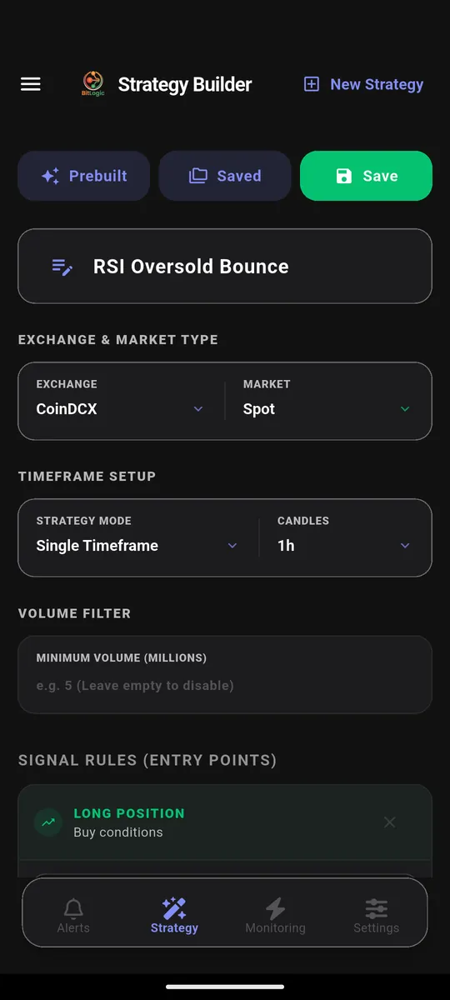
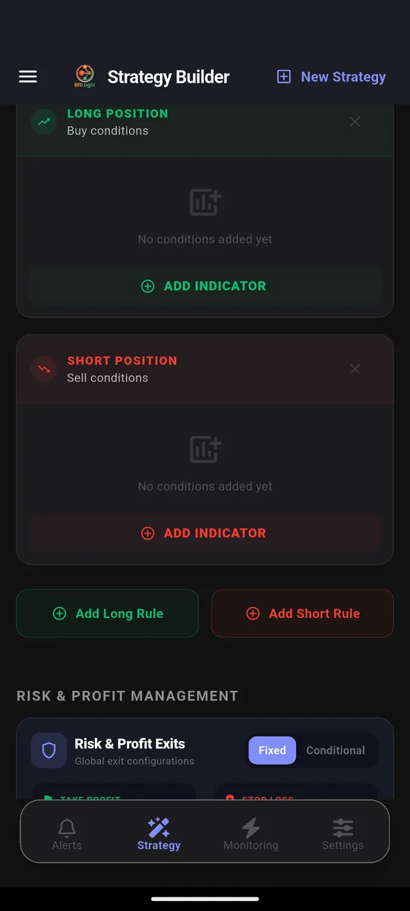
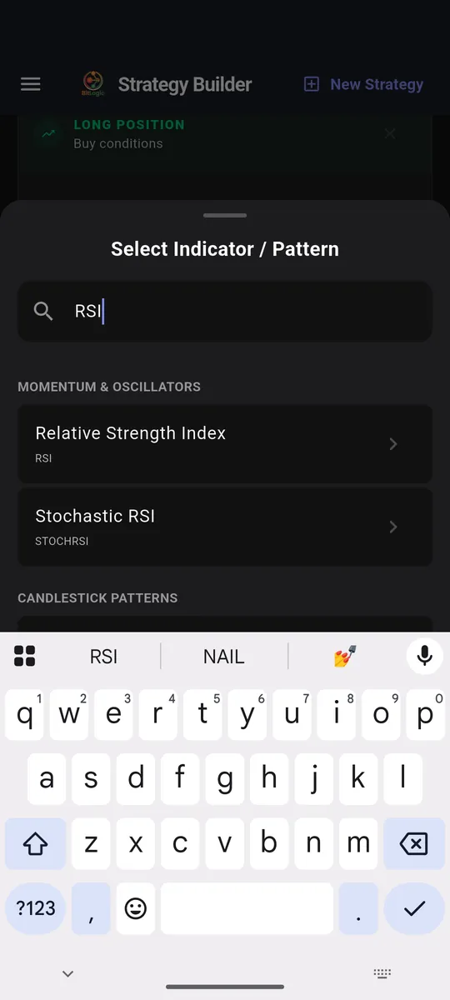
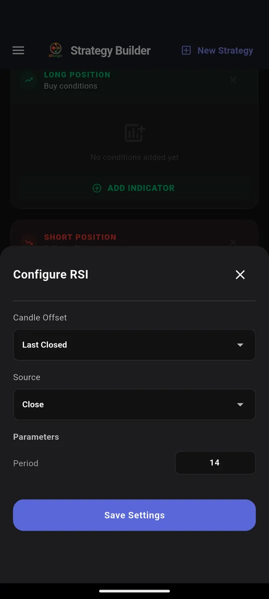
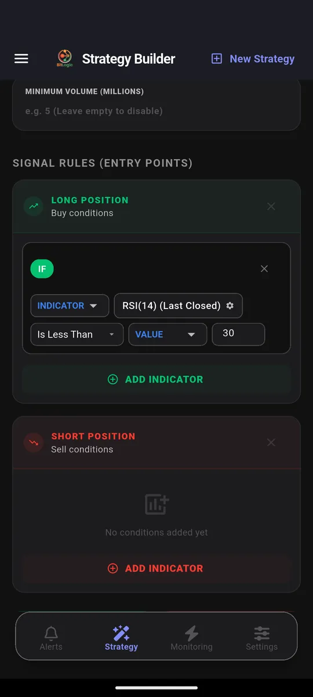
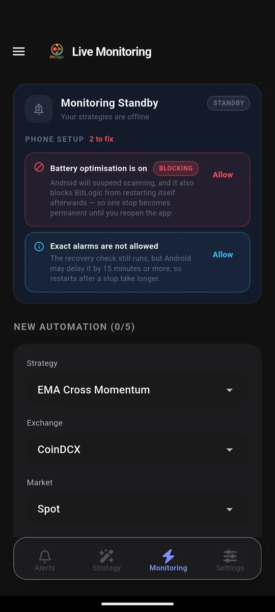
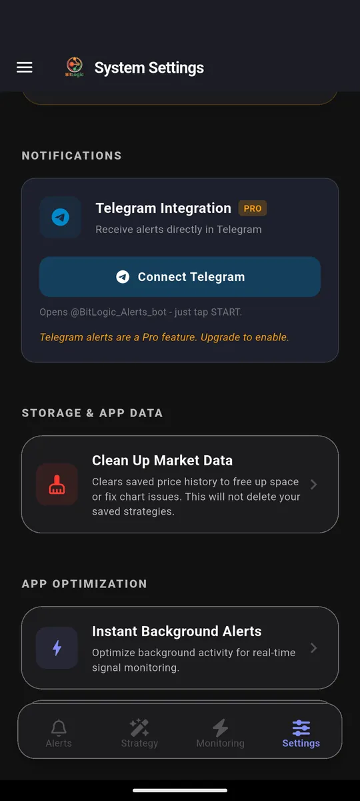
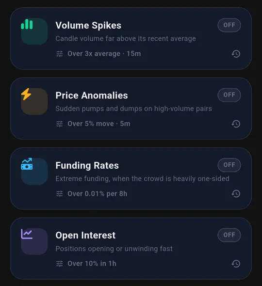

The Free TradingView Alternative for Crypto Alerts: Your Rules, Not Another Dashboard
TradingView is the best charting platform in crypto. Nobody serious disputes that.
But most people searching for a free TradingView alternative for crypto are not unhappy with the charts. They are unhappy with the job they end up doing around them: opening the app, flicking through symbols, and hoping to catch a setup before it is gone.
That is a dashboard problem. A dashboard shows you everything and waits for you to look. What most traders actually want is the reverse: describe the setup once, and be told the moment any coin on the exchange matches it, without paying for a bigger plan just to get more alerts.
This guide covers why alerting hits a wall on TradingView's free plan, the difference between a dashboard and rule-based alerts, and how to build your own crypto alert rules in BitLogic for free, with examples you can copy.
TradingView plan details were checked in September 2026 on its official pricing page (Indian pricing, annual billing). Limits change, so verify before you buy. BitLogic is not affiliated with TradingView.
Why Traders Look for a Free TradingView Alternative for Crypto
The reasons are rarely about quality. They are about shape and cost, and the free plan is where both bite hardest.
Alerts are rationed by plan
| TradingView plan | Price alerts | Technical alerts | Watchlist alerts |
|---|---|---|---|
| Basic (free) | 3 | Not available | Not available |
| Essential | 20 | 20 | Not available |
| Plus | 100 | 100 | Not available |
| Premium | 400 | 400 | 2 |
| Ultimate | 1,000 | 1,000 | 15 |
On the free plan, three price alerts do not cover a watchlist, and you get no technical alerts at all: alerts on indicators start at Essential (₹995/month on annual billing). Alert headroom is the main reason people upgrade.
One alert watches one symbol
A standard TradingView alert is attached to a single symbol. If your setup is "RSI below 30 on the 1-hour" and you want it checked across 400 pairs, that is 400 alerts, which is more than any plan below Premium allows.
Watchlist alerts fix this, but they start at Premium (₹4,195/month on annual billing, Indian pricing), and Premium gives you two. Pine Script can also watch several symbols at once, if you are willing to write and maintain code.
The screener is something you check
TradingView's screener is genuinely powerful. But it is a screen: it filters the market when you open it. It does not tap you on the shoulder at 3 a.m. when a pair crosses your line.
Dashboard vs Rules: Two Ways to Watch the Market
| Dashboard model | Rules model | |
|---|---|---|
| You… | Open it and look | Describe the setup once |
| It watches… | Whatever is on screen | Every pair on the exchange |
| You find out… | When you next check | The moment it matches |
| Limited by… | Your attention | How well you wrote the rule |
| Fails by… | Missing setups | Noisy alerts, if the rule is loose |
Neither model is wrong. Charts are where you decide whether to take a trade. Rules are how you find out there is a trade worth considering. The trouble starts when you use a dashboard to do a rule's job.
Look at the last row, though. A rules-based tool is only as good as the rule you give it. If the builder cannot say exactly what you mean, you swap missed setups for spam. So the rule builder is the part worth judging.
Alerts on Your Own Rules: How BitLogic Works
BitLogic is a crypto screener and alert app built around the rules model. There is no wall of tickers to stare at. You write the condition once, and the app does the watching. (The steps below match our step-by-step CoinDCX screening guide, if you want more detail.)
Step 1: Pick the exchange and market
Choose Coinbase, CoinDCX, Binance, Bybit, OKX, Kraken, KuCoin, VALR, Bitstamp or Upbit, then spot or futures.

Step 2: Build the rule
Every strategy has a Long rule and a Short rule, and each rule is a chain of conditions.

Pick an indicator from the library:

Set its period, source, and which candle to read:

Then choose the comparison:

Step 3: Scan the whole exchange
Run the strategy once to see what matches right now. In this test it checked 400 CoinDCX spot pairs in 17 seconds and returned three matches, each with an entry, target and stop:

Step 4: Turn the rule into an alert
Live Monitoring re-runs the same strategy in the background (every 1, 5, 15 or 30 minutes, every 1 or 4 hours, or once a day) and notifies you when a pair matches, even with the app closed. You can monitor up to five strategies at once.

On Pro, the same alerts also arrive in Telegram. Tap Connect Telegram, press Start in the bot, and you are done. There is no webhook server to set up.

Build your first alert rule free on Google Play.
What You Can Put in a Rule
"Alerts on your own rules" only means something if the rules can say what you mean. Here is what the builder gives you.
The building blocks
| Category | Count | Examples |
|---|---|---|
| Trend & overlap | 19 | EMA, SMA, VWAP, MACD, Bollinger Bands, Supertrend, Ichimoku |
| Momentum & oscillators | 23 | RSI, Stochastic RSI, MFI, ADX, CCI, Williams %R, Squeeze |
| Volatility | 6 | ATR, Keltner Channels, Donchian Channels |
| Volume | 8 | OBV, Chaikin Money Flow, VWMA, Volume SMA |
| Price action | 8 | Open, High, Low, Close, Volume and their averages |
| Candlestick patterns | 64 | Hammer, Engulfing, Morning Star, Pin Bar, Inside Bar |
That is 56 technical indicators and 64 candlestick patterns, plus price-action conditions, each with its own settings.
The comparisons
- Is Greater Than, Is Less Than, Is Equal To, Between
- Crosses Above, Crosses Below
- Increased by %, Decreased by %
- For candlestick patterns: Is Detected, Is Bullish, Is Bearish, Does Not Exist
What makes the rules precise
- Compare against anything. The right side of a condition can be a number, another indicator, or a calculation. "Close is greater than EMA(200)" and "Volume is greater than Volume SMA(20) × 2" are each a single condition.
- AND / OR logic. Chain conditions so that all must hold, or so that any one will do.
- Mixed timeframes. Every indicator carries its own timeframe, so a 15-minute trigger can require a 4-hour trend filter inside the same rule.
- Closed candles, if you want them. Each indicator reads either the live candle or the last closed one. Reading the last closed candle means you never get an alert for a move that vanished before the candle finished.
Three Custom Crypto Alerts You Could Build Today
These show what the builder can express. They are examples, not trade recommendations.
1. Oversold, but still in an uptrend
IF RSI(14) [1h, Last Closed] Is Less Than 30
AND Close [4h] Is Greater Than EMA(200) [4h]A bare "RSI below 30" fires constantly during a downtrend. The 4-hour EMA filter only lets it through when the bigger trend still points up. It is the same idea behind our RSI Reversal Bounce strategy.
2. A moving-average cross with real volume behind it
IF EMA(20) [1h] Crosses Above EMA(50) [1h]
AND Volume [1h] Is Greater Than Volume SMA(20) [1h] × 2A cross on thin volume is often noise. Requiring double the average volume filters out most of it.
3. A reversal candle at a stretched extreme
IF Hammer [4h, Last Closed] Is Bullish
AND RSI(14) [4h] Is Less Than 35Hammers are everywhere. A hammer when momentum is already stretched is the one worth a look.
Each of these watches every pair on the exchange as one alert: the job that would take hundreds of single-symbol alerts on a chart-first platform.
Market-Wide Alerts Without Writing a Rule
Some events are hard to express as an indicator rule, so BitLogic also has five ready-made feeds, each with a single threshold:
- Liquidations: large forced closes on Binance (how liquidation alerts work)
- Volume spikes
- Price anomalies
- Funding rates (how funding rate alerts work)
- Open interest

What Is Free in BitLogic (and What Pro Adds)
"Free" only matters if the free plan does the job. Here is where the line sits, next to TradingView's free plan for alerting:
| TradingView Basic (free) | BitLogic free | BitLogic Pro | |
|---|---|---|---|
| Price | ₹0 | ₹0 | ₹480/month or ₹4,800/year, 14-day free trial |
| Alerts on indicators | None | Yes: full no-code rule builder | Yes |
| One alert watches | One symbol | Every pair on the exchange | Every pair on the exchange |
| Background alerts | 3 price alerts | Up to 5 live strategies + 5 market feeds | Up to 5 live strategies + 5 market feeds |
| Scans | Not applicable | Guests: 3 per 24 hours; a free account raises the limit | Unlimited |
| Telegram delivery | No | No (push notifications only) | Yes |
| Ads | Yes | Yes | Ad-free |
In short: the rule builder, whole-exchange scanning, live monitoring and push alerts are all free. Pro is for Telegram delivery, unlimited scans, no ads and priority support, and you do not need it to follow anything in this guide.
TradingView vs BitLogic for Alerts and Screening
| TradingView | BitLogic | |
|---|---|---|
| Built around | Charts and analysis | Rules and alerts |
| One alert covers | One symbol (watchlist alerts from Premium) | Every pair on the exchange |
| Free alerts | 3 price alerts (no technical alerts) | 5 live strategies + 5 market feeds |
| Custom logic | Pine Script (code) | No-code builder: AND/OR, mixed timeframes, maths |
| Telegram delivery | Via webhooks on paid plans | Built in (Pro) |
| Needs exchange API keys | No | No |
| Charting | Best in class | None |
| Platforms | Web, desktop, iOS, Android | Android, Windows, basic web screener |
| Paid plans | ₹995 to ₹17,333/month | ₹480/month or ₹4,800/year |
TradingView figures are Indian pricing on annual billing, September 2026. BitLogic guests get 3 scans per 24 hours; a free account raises that limit.
When TradingView Is Still the Better Choice
An honest comparison includes the case for the other side. Stick with TradingView if:
- You analyze visually. Drawing tools, multi-chart layouts and deep chart work are TradingView's home ground. BitLogic shows you matches, not a canvas.
- You write Pine Script. If you already code your own studies, you have flexibility no fixed indicator library can match.
- You need an iPhone app. BitLogic is on Android and Windows, with a basic web screener; there is no iOS app yet.
- You trade stocks or forex too. BitLogic is crypto only.
Plenty of traders use both: BitLogic to find the setup, TradingView to judge it. That split plays to each tool's strength. For bot execution as well, see the full BitLogic vs TradingView vs 3Commas comparison.
FAQ
What is a good free TradingView alternative for crypto alerts?
It depends what you use TradingView for. If you mainly need alerts rather than charts, a rules-based crypto screener with alerts fits better. BitLogic's free tier includes the full rule builder, whole-exchange scans, live monitoring of up to five strategies and five market-wide alert feeds. Guests get 3 scans per 24 hours, and a free account raises that limit.
Is BitLogic really free?
Yes. The rule builder, whole-exchange scans, live monitoring of up to five strategies, the five market feeds and push notifications are free. The free app is supported by ads. Pro (₹480/month or ₹4,800/year, with a 14-day free trial) adds Telegram delivery, unlimited scans, an ad-free experience and priority support.
Can I get crypto alerts on Telegram without TradingView webhooks?
Yes. BitLogic Pro sends alerts straight to Telegram. Tap Connect Telegram, press Start in the bot, and alerts begin arriving. No webhook server or third-party relay is needed.
Do I need to know Pine Script to build custom crypto alerts?
No. Rules are built by choosing an indicator, a comparison and a value from menus. You can still combine conditions with AND/OR, mix timeframes and compare one indicator against another.
Does BitLogic need my exchange API keys?
No. It reads public market data only and never places trades, so there is no key to share or leak.
Can I use BitLogic and TradingView together?
Yes, and it is a sensible pairing. Let BitLogic watch the whole exchange and alert you, then open TradingView to study the chart before you decide.
The Bottom Line
TradingView is where you look at the market. BitLogic is how the market tells you when to look.
If your alert list is outgrowing your plan, or you want one rule to cover every pair on the exchange, you need a rules tool rather than a bigger dashboard. For traders who work from their phone, that makes BitLogic a practical free TradingView alternative for crypto alerts. Write the rule once, for free, and let it do the watching.
Download BitLogic free on Google Play, build your first rule free in a couple of minutes, and only start the 14-day Pro trial if you want your alerts in Telegram.
Educational content only, not financial advice. Example rules show what the builder can express, not setups to trade. TradingView is a trademark of its owner and is referenced here for comparison only.